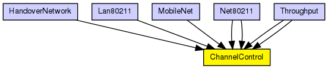
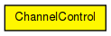

ChannelControl has exactly one instance in every network model that contains mobile or wireless nodes. This module gets informed about the location and movement of nodes, and determines which nodes are within communication or interference distance. This info is then used by the radio interfaces of nodes at transmissions.
Side effect: updates the containing compound module's display string according to the given playground size (sets "p=0,0;b=$playgroundSizeX, $playgroundSizeY").
This ChannelControl is a different implementation from the one in Mobility Framework 1.0a5: here we use sendDirect(), while the MF version used normal send() and dynamic connections.
Author: Andras Varga (based on MF's ChannelControl by Steffen Sroka and Daniel Willkomm)
See also: BasicMobility
The following diagram shows usage relationships between types. Unresolved types are missing from the diagram.
The following diagram shows inheritance relationships for this type. Unresolved types are missing from the diagram.
| Name | Type | Description |
|---|---|---|
| HandoverNetwork | network | (no description) |
| Lan80211 | network | (no description) |
| MobileNet | network | (no description) |
| Net80211 | network | (no description) |
| Net80211 | network | (no description) |
| Throughput | network | (no description) |
| Throughput | network | (no description) |
| Name | Type | Default value | Description |
|---|---|---|---|
| coreDebug | bool | false |
debug switch for core framework |
| playgroundSizeX | double | 600 |
x size of the playground (in meters) |
| playgroundSizeY | double | 400 |
y size of the playground (in meters) |
| pMax | double | 20mW |
maximum sending power used for this network (in mW) |
| sat | double | -110dBm |
signal attenuation threshold (in dBm) |
| alpha | double | 2 |
path loss coefficient |
| carrierFrequency | double | 2.4GHz |
carrier frequency of the channel (in Hz) |
| numChannels | int | 1 |
number of radio channels (frequencies) |
| Name | Value | Description |
|---|---|---|
| display | i=misc/sun | |
| labels | node |
// // ChannelControl has exactly one instance in every network model that // contains mobile or wireless nodes. This module gets informed about the // location and movement of nodes, and determines which nodes are within // communication or interference distance. This info is then used by the // radio interfaces of nodes at transmissions. // // Side effect: updates the containing compound module's display string // according to the given playground size (sets <tt>"p=0,0;b=$playgroundSizeX, // $playgroundSizeY"</tt>). // // This ChannelControl is a different implementation from the one in // Mobility Framework 1.0a5: here we use sendDirect(), while the MF version // used normal send() and dynamic connections. // // @author Andras Varga (based on MF's ChannelControl by Steffen Sroka and Daniel Willkomm) // @see BasicMobility // simple ChannelControl { parameters: bool coreDebug = default(false); // debug switch for core framework double playgroundSizeX = default(600); // x size of the playground (in meters) double playgroundSizeY = default(400); // y size of the playground (in meters) double pMax @unit("mW") = default(20mW); // maximum sending power used for this network (in mW) double sat @unit("dBm") = default(-110dBm); // signal attenuation threshold (in dBm) double alpha = default(2); // path loss coefficient double carrierFrequency @unit("Hz") = default(2.4GHz); // carrier frequency of the channel (in Hz) int numChannels = default(1); // number of radio channels (frequencies) @display("i=misc/sun"); @labels(node); }